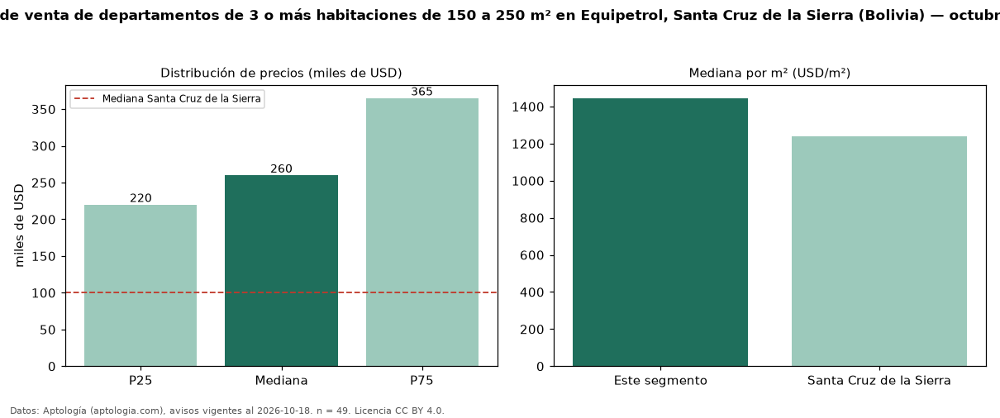

Precio de venta de departamentos de 3 o más habitaciones de 150 a 250 m² en Equipetrol, Santa Cruz de la Sierra (Bolivia) — octubre 2026
USD 260.000 es el precio mediano de departamentos de 3 o más habitaciones de 150 a 250 m² en venta en Equipetrol, Santa Cruz de la Sierra (Bolivia) (n = 49 avisos). Eso es 9 % más que la mediana de los departamentos de 3 o más habitaciones en venta de Equipetrol (USD 238.112, n = 93); este segmento reúne el 53 % de esos avisos. Por metro cuadrado, la mediana es USD 1.445/m² (n = 49), 1 % por encima de los departamentos de 3 o más habitaciones en venta de Equipetrol (USD 1.429/m²). El área mediana anunciada es 201 m². La cuota de mantenimiento o condominio mediana declarada es USD 15,00 al mes (n = 23). La mediana de todos los departamentos en venta de Santa Cruz de la Sierra es USD 100.000 (+160 % de diferencia). La mitad central de los avisos va de USD 220.000 a USD 365.000 (razón 1,7), una dispersión moderada. Datos: Aptología (aptologia.com), CC BY 4.0 — https://www.aptologia.com/bo. Archivos: PDF, CSV con las cifras y gráfica PNG.

| Avisos únicos | 49 |
|---|---|
| Percentil 25 | COP 220.000 |
| Mediana | COP 260.000 |
| Percentil 75 | COP 365.000 |
| Mediana por m² | COP 1.445 |
Fuente: avisos vigentes de portales inmobiliarios recopilados por Aptología, deduplicados (mínimo 30 avisos únicos por celda). Precios pedidos, no cerrados. Fecha: 2026-10-18.